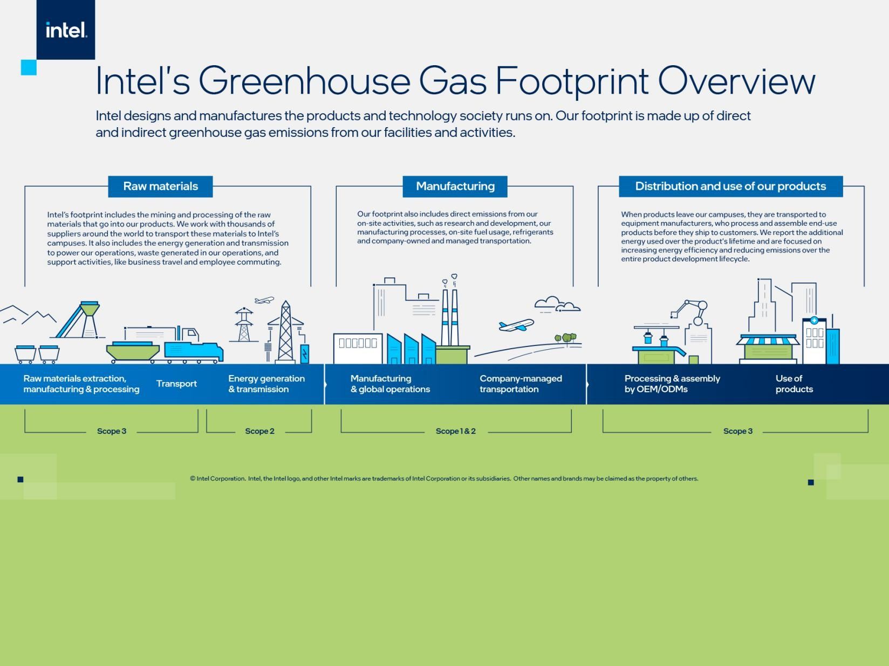

1968
Intel Founded

Robert Noyce and Gordon Moore rename the newly formed company NM Electronics to Intel, laying the foundation for decades of technological innovation.
Intel began as a company focused on building the future of semiconductors, creating the foundation for modern computing and digital transformation.
1971
First Microprocessor

Intel debuts the 4004, the world's first commercial microprocessor, igniting the microprocessor revolution and propelling the future of computing devices.
The 4004 marked the start of the microprocessor era, allowing computers to become smaller, faster, and more widely available to people and businesses.
1978
8086 Processor

Launch of the 8086 processor, establishing the x86 architecture that drives countless PCs and servers in the modern era.
The 8086 introduced a processor family that shaped personal computers and enterprise systems for decades, making Intel a global technology leader.
1985
386 Processor

Intel introduces the 386 processor with 32-bit architecture, enabling a new era of performance and multitasking for personal computers.
The 386 helped bring more powerful software, multitasking, and modern desktop computing to homes and businesses around the world.
2006
Peak GHG Emissions

Intel's absolute Scope 1 and 2 greenhouse gas emissions peak in 2006. In the years that follow, Intel invests in chemical substitution and abatement, energy conservation, process optimization, and renewable electricity to reduce its operational emissions.
This milestone reflects a turning point, when Intel committed more heavily to cleaner manufacturing and lower-emission operations as part of a long-term sustainability shift.
2020
RISE Strategy

Intel launches its RISE (Responsible, Inclusive, Sustainable, Enabling) strategy and 2030 goals, aiming to drive industry-wide progress on climate action, water stewardship, and waste reduction.
RISE brings sustainability, inclusion, and responsible innovation together into one strategic framework that guides Intel's actions and goals for the decade ahead.
2022
Net-Zero By 2040

Intel commits to achieve net-zero greenhouse gas emissions (Scope 1 and 2) across its global operations by 2040, building on years of environmental initiatives.
Net-zero commitments help set a clear target for the company to reduce emissions across its facilities and operations while continuing to innovate sustainably.
2023
Renewable Electricity

Intel achieved 99% renewable electricity across its global operations, significantly reducing emissions from purchased electricity and advancing its goal of reaching 100% renewable electricity worldwide by 2030.
This milestone shows how clean energy can reduce carbon emissions while supporting large-scale manufacturing and continued product innovation.
2024
Sustainability Summit

Intel hosts its first Sustainability Summit, uniting suppliers, government officials, and industry leaders to collaborate on next-generation sustainable semiconductor manufacturing.
Collaboration is key to sustainable manufacturing, because suppliers, researchers, and policy leaders all help shape the future of cleaner technology production.